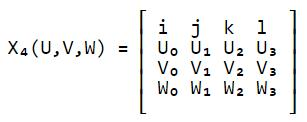

This is a big topic! I found this material very helpful in understanding 4D projection. Here is my point of view.
First of all, the projection between dimensionality is layer by layer, that means, we can project 4D to 3D first, then 3D to 2D.
This is a big topic! I found this material very helpful in understanding 4D projection. Here is my point of view.
First of all, the projection between dimensionality is layer by layer, that means, we can project 4D to 3D first, then 3D to 2D.
Here I summarize some math used in 4D space.
Foundamentally, a 4D position is in 4 DoF(Degree of Freedom, same as below), and a rotation has 6 DoF. An effective explanation would be: In 3D, a rotation has 3 DoF aligning with each axis, which could also be considered as every 2 axis (x, y, z)->(yz, zx, xy). Same can be found in 2D: 1 axis (xy) and in 1D: no rotation. So, a 4D transform consists of a position (x, y, z, w) and a rotation (yz, zx, xy, xw, yw, zw).
Similar to 3D rotation, a rotation matrix in 4D should be 4x4. Here I simply multiply all matrices for all axis in a certain order. This should be replaced by Rotor4D later, which can be considered as the equivalence of Quaternion in 3D.
There are also things that not quite the same with 3D, such like cross product. There are no cross product between two vectors in 4D, because we cannot find one single direction that is perpendicular to the given 2 vectors. That is because the number of co-perpendicular axis is now 4, so we need 3 vectors to calculate their cross product. We can also use matrix determinant to conduct the 4D cross product:
After studying the paper and demo, I started working in Unity. By simply implementing rotation functions and orthogonal projection, I got the result:

This hypercube is drawn with Debug.DrawLine() and automatic rotation is added. I am still thinking what is the best way to visualize 4D object.
Miegakure: - Intro to 4D gameplay - , - Technology behind -
4D Toy: - Demo video - , - Website -
Paper: - 4D visualization -
And this is my new GitHub repository!